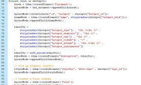
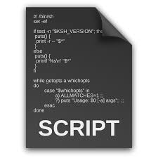

SQL (structured query language - linguagem de consulta estruturada) é a linguagem de pesquisa declarativa padrão para banco de dados relacional.
 Um script é um conjunto de instruções ou comandos escritos em uma linguagem de programação que automatizam tarefas ou manipulam dados em um sistema de computador. Scripts são frequentemente usados em ambientes web para adicionar funcionalidades dinâmicas a páginas da web, como validação de formulários, animações, interações de usuário e atualizações de conteúdo em tempo real. Linguagens comuns para escrever scripts em aplicações web incluem JavaScript, Python e PHP.